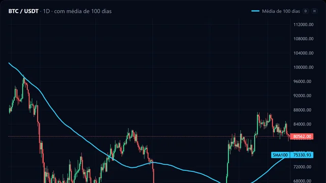
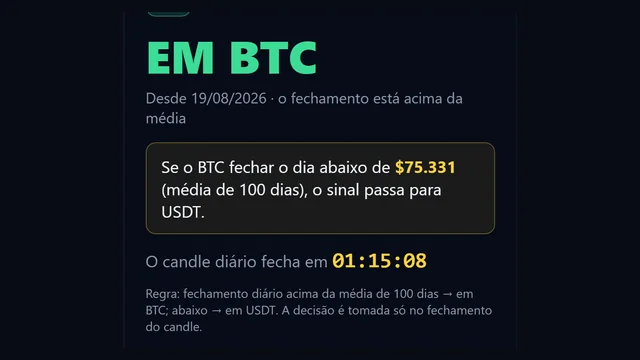
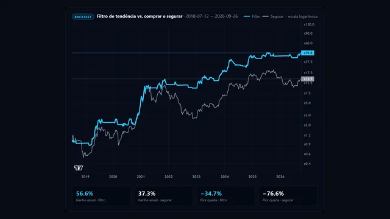
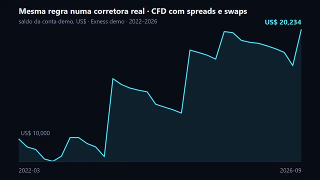

Pesquisamos mercados, medimos custos e validamos ideias antes de transformá-las em software, dados ou serviços. Se uma ideia não sobrevive, também publicamos.
Cada triângulo é um negócio real de Bitcoin na Binance, agora mesmo: ▲ ciano quando alguém comprou, ▼ azul quando vendeu; maior, mais dinheiro. Eles percorrem os últimos 3 minutos.
Mercado ao vivo
Assim o mercado se move agora
Cripto em tempo real, ações dos EUA e da B3, futuros, forex e economia: escolha uma aba. O gráfico interativo é para você usar.
Ativo
Preço
24 h
Últimas 24 h
Carregando…
AO VIVO Preços da Binance em tempo real. Não são recomendações.
Gráfico interativo · BTC/USDTGráfico da TradingView (link de afiliado)
Carregando…
As ações com mais movimento do dia nos EUA. Dados da TradingView; alguns mercados aparecem com atraso conforme a bolsa.
Ibovespa, ações e minicontratos da B3. Dados da TradingView; alguns mercados aparecem com atraso conforme a bolsa.
Minicontratos da B3 e, como referência global, índices e commodities (incluindo a soja) em CFD. Dados da TradingView; alguns mercados aparecem com atraso conforme a bolsa.
Moedas da região frente ao dólar e os pares principais. Dados da TradingView; alguns mercados aparecem com atraso conforme a bolsa.
Mapa da inflação e calendário econômicoA inflação de cada país (dados do FMI) e os próximos indicadores, com a sua conta grátis.
Inflação no mundo
Variação anual dos preços ao consumidor por país. Passe o cursor (ou toque) em um país.
Carregando…
Calendário econômico: próximos dados e indicadores por país. Dados da TradingView; alguns mercados aparecem com atraso conforme a bolsa.
Dólares digitais
Onde estão seus dólares digitais
Quantas stablecoins circulam, quem paga para guardá-las e em quais redes o dinheiro se move. Dados públicos da DefiLlama, a cada 30 minutos. É informação, não recomendação.
Stablecoins em dólar em circulação
—
Últimos 180 dias, em bilhões de dólares.
As mais usadas
Rendimentos de stablecoins e dinheiro por redeCom a sua conta grátis você vê quem paga pelos seus dólares digitais, quanto está depositado e em quais redes.
Quem paga pelos seus dólares digitais
Protocolo
Moeda
Rede
Rendimento anual
Depositado
Carregando…
Ordenados por dinheiro depositado, não por rendimento. Mais rendimento costuma significar mais risco: protocolos DeFi podem falhar ou ser hackeados e nenhum banco central os garante. Alguns fundos são só para investidores qualificados, e o rendimento muda todos os dias.
Onde está o dinheiro do DeFi
Fonte: DefiLlama.
Dados reaisPreços públicos, anos de histórico
Custos incluídosTaxas, slippage e swaps
Fora da amostraValidamos em períodos não vistos
Código abertoQualquer pessoa pode refazer
Foz do Iguaçu · Ciudad del Este · Asunción
O que construímos
O que oferecemos
Pesquisa aberta, um produto para gestão de risco e serviços técnicos. Tudo sai do mesmo processo de testes.
Não é sorte, é processo. Cada ideia passa pelos mesmos filtros antes de virar ferramenta ou dado.

1
Hipótese
Pegamos uma ideia concreta de mercado.

2
Regras exatas
Entradas, saídas e tamanho, sem ambiguidade.

3
Backtest com custos
Anos de dados, taxas, slippage e swaps.

4
Fora da amostra
Validamos com dados que não usamos para criá-la: outros períodos e uma corretora real com seus custos.
5
Real, se sobreviver
Só então vira produto ou serviço.
Fontes primeiro · cada dado com origem e dataCustos reais · sem resultado maquiadoO ruim também é publicado · a maioria não funcionaNotícia não é sinal · informamos, não recomendamosCódigo aberto · você pode refazer
Resultados completos e estratégia ao vivoCom a sua conta grátis você vê a tabela de experimentos e a nossa regra operando ao vivo.
Publicamos o que encontramos, inclusive quando o resultado é ruim.
A WIQON nasceu na fronteira entre o Brasil e o Paraguai, onde o real, o guaraní e o dólar convivem todos os dias. A gente testa, mede e, se não sobrevive, publica do mesmo jeito.
Não vendemos sinais nem administramos dinheiro de terceiros.